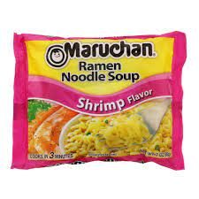

Best Ramen-noodles Recipe East of the Mississippi

Brief overview of the #1 Best Ramen Recipe
This craving destorying, sodium overload meal of greatness
is made up of three main ingredents. the ingredents could be
alot more but we all know, easier is better.
List of ingredients Required
- .50cent Gas Station Ramen Noodles Pack
- Hot water
- Spoon or Fork (optional)
- Microwave safe bowl
Steps to Crafting Perfection
- remove noodles from package, place in bowl
- add enough water so the noodles float
- Put in microwave on a set time of 4min
- remove seasoning packet(don't forget)
- Insert seasonings, stur and enjoy